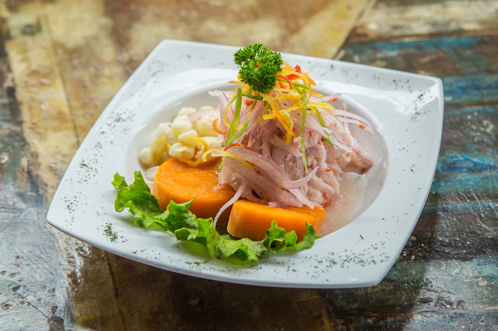

Ceviche

Ceviche also known as cebiche or seviche, usually consists of seafood that is marinated with lime juice, the acidity of the lime juice actually “cooks” the seafood.
Not all types of cebiches are made with seafood and not all seafood cebiches are made with raw seafood.
This recipe for Peruvian fish cebiche is preparared with fresh fish, limes, onions, spicy peppers, and fresh cilantro.
Ingredients
- 1 ½ pounds very fresh and high quality fish filets corvina, halibut, escolar, hamachi, mahi-mahi
- 1 red onion thinly sliced
- 1 cup freshly squeezed lime juice from about 35- 40 key limes, or 15-20 Peruvian limes
- 1-2 habanero peppers cut in half, without seeds and deveined
- 2-3 sprigs of fresh cilantro
- Salt to taste
- Finely chopped cilantro to taste
Steps
- Cut the fish into small cubes, place in a glass bowl and cover with cold water and 1 tablespoon of salt, cover and refrigerate while you prepare the onions and juice the limes.
- Rub the thin onion slices with 1/2 tablespoon of salt and rinse in cold water.
- Rinse the fish to remove the salt
- Place the cubes of fish, half of the sliced onions, and hot peppers in a glass bowl and pour the lime juice over the ingredients. Sprinkle with a little bit of salt. To minimize the acidity of the limes you can put a few ice cubes in the mix.
- Cover and refrigerate for about 5-15 minutes.
- Remove the cilantro sprigs and the hot peppers from the mix. Taste the fish ceviche and add additional salt if needed.
- Use a spoon to place the ceviche in each serving bowl, add additional sliced onions to each bowl, sprinkle with finely chopped cilantro, and diced or sliced hot peppers.
- Serve immediately with your choice of sides and garnishes.